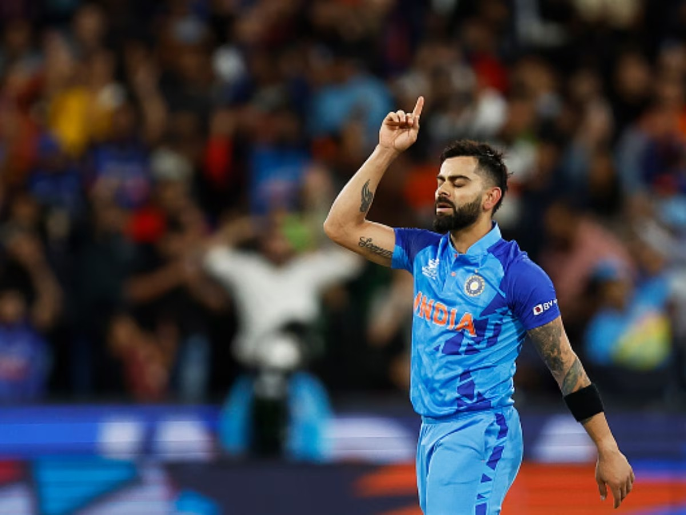

Virat Kohli
Age 36
The Face Of indian Cricket
Virat Kohli is an Indian international cricketer and the former captain of the Indian national cricket team. He currently represents Royal Challengers Bangalore in the IPL and Delhi in domestic cricket. Kohli is widely regarded as one of the greatest batsmen in the history of the sport, and the best of this era
Statistics
- AGRESSIVE
- MOST RUN SCORER
- Most MOTM
- BEST AVERAGE
- BEST CAPTAIN